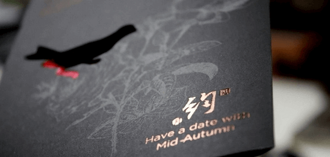

玉驾亲征


欧神诺“印象宝玉”舞台剧正式开演啦，通过以下方式可直达演播会场：
1、在欧神诺公众号留言“报名”
2、在欧神诺门店报名
约距今七千至四千年间的新石器时代晚期，掌祭祀大权者，用美玉制作「祭器」礼拜祖先。他们相信氏族远祖的生命，是经由神物源自上帝，便在玉器上雕饰想像中神祗祖先的形貌，甚至刻绘极具深义的符号，以礼拜之。希望藉玉器特有的质地、造形、花纹与符号，产生感应的法力，与神祗祖先沟通，汲取他们的智慧，获得福庇。